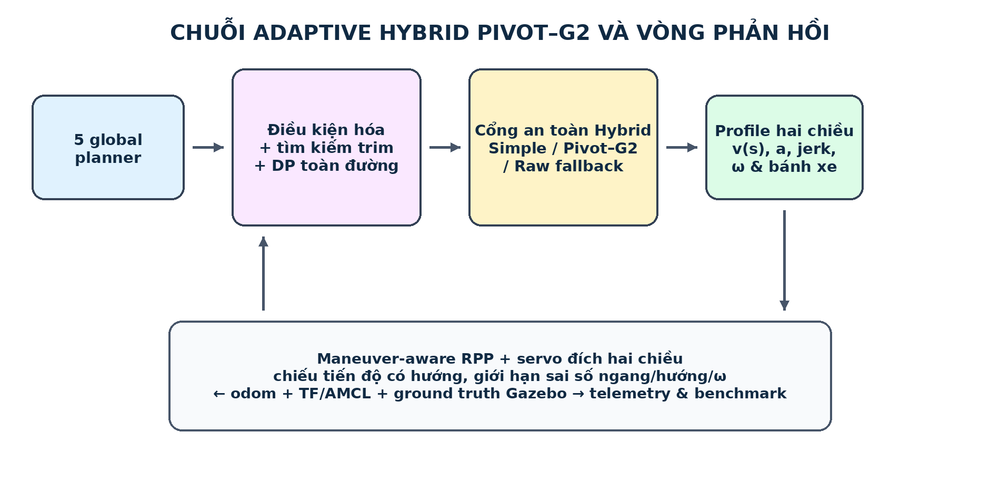
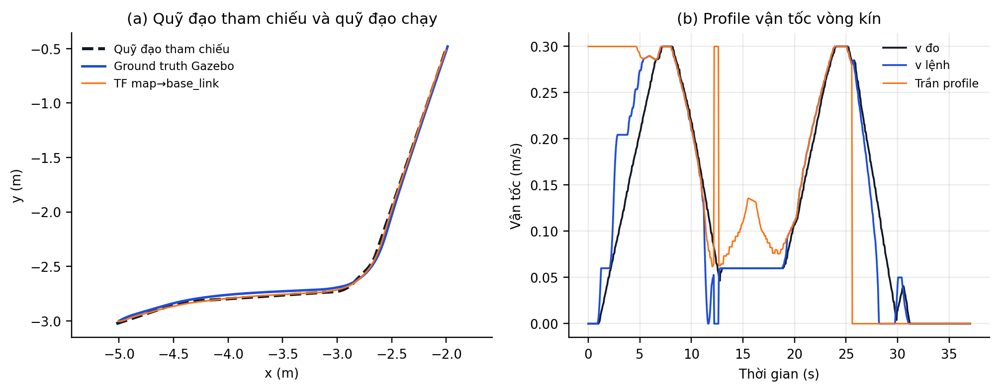
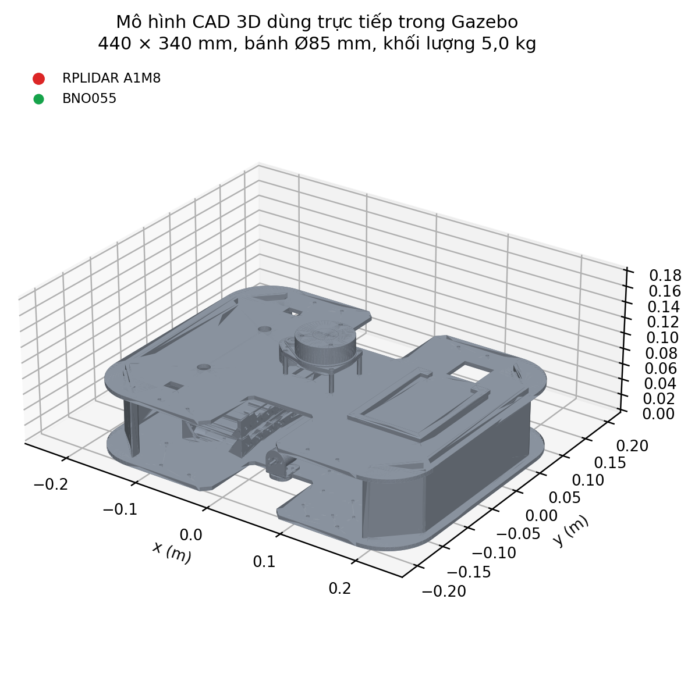
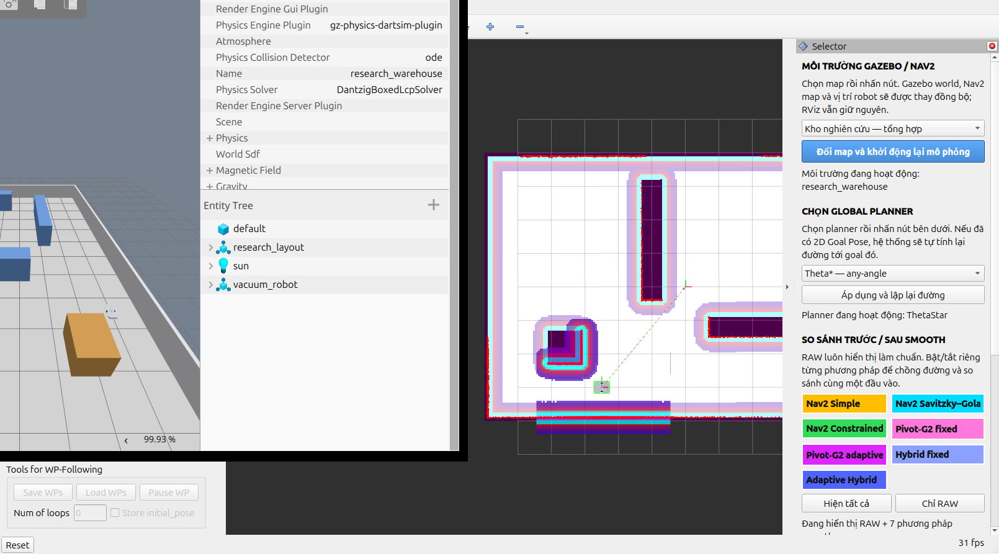
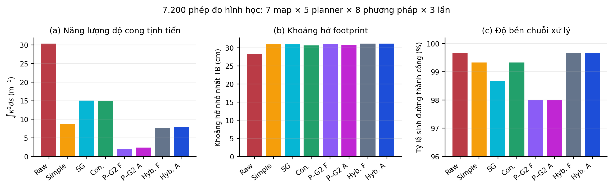
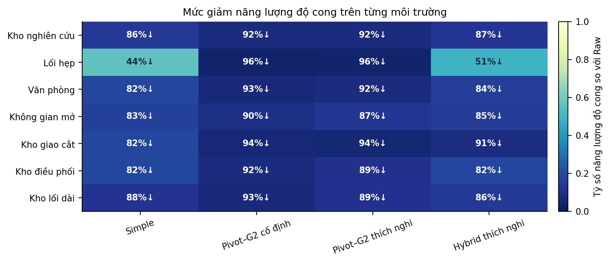
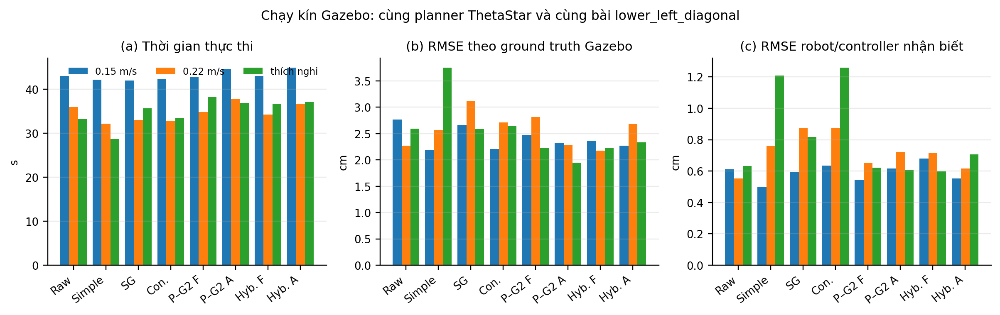
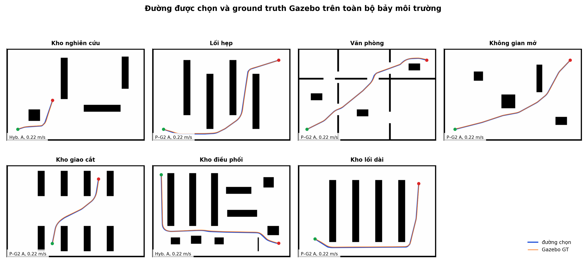

Tác giả: [TÊN TÁC GIẢ] Đơn vị: [ĐƠN VỊ] Email: [EMAIL]
Phạm vi bằng chứng: toàn bộ số liệu trong tài liệu này được sinh từ ROS 2 Jazzy/Nav2 và Gazebo Sim 8. “Ground truth” nghĩa là pose mô phỏng Gazebo, không phải thí nghiệm robot vật lý. Không tuyên bố tối ưu toàn cục; “tốt hơn” luôn gắn với metric và miền thử cụ thể.
Hai lỗi thực tế được tái hiện từ trace: (1) gần đích, goal checker nhả điều kiện vị trí khi AMCL dịch khoảng vài centimet, controller quay theo bearing nhiễu rồi quay ngược về yaw đích; (2) profile cũ chỉ truyền giới hạn phanh theo chiều lùi, nên ngay sau đoạn cong vận tốc có thể được trả nhanh hơn khả năng động học, tạo sai số ngang. Ngoài ra, phép chiếu điểm gần nhất thuần khoảng cách có thể nhảy nhánh tại đường tự giao.
| Metric | Trước | Sau | Thay đổi |
|---|---|---|---|
| Thời gian thực thi (s) | 53.094 | 38.265 | -27.9% |
| RMSE ground truth (cm) | 1.883 | 1.412 | -25.0% |
| Sai số bám cực đại (cm) | 2.954 | 2.909 | -1.5% |
| Sai số vị trí cuối (cm) | 2.309 | 1.071 | -53.6% |
| Sai số yaw cuối (rad) | 0.0138 | 0.0061 | -55.6% |
Bản sửa chốt riêng tọa độ đích trong odom nhưng biến đổi yaw theo TF mới nhất; servo cuối hai chiều; phép chiếu có hướng, cửa sổ tiến độ và giới hạn hồi quy; bao tăng/giảm tốc S-curve hai chiều; giới hạn theo sai số ngang, heading và residual ω. Kết quả trên đúng kịch bản lower_left_diagonal cho thấy thời gian, RMSE và lỗi cuối đều giảm; biến thiên AMCL được báo riêng thay vì gán cho controller.

Đường planner được loại điểm trùng, đơn giản hóa kiểu Ramer–Douglas–Peucker có biên sai lệch, nhưng mọi shortcut phải vượt qua kiểm tra swept-footprint. Một bộ phát hiện đổi dấu góc liên tiếp triệt dao động costmap nhỏ trong một cửa sổ hữu hạn. Mỗi thao tác đều giữ liên kết về chỉ số raw path để benchmark được.
Với r(u)=Σᵢ₌₀⁵ C(5,i)(1−u)⁵⁻ⁱuⁱPᵢ, hai cặp điểm đầu và cuối thẳng hàng với hai cạnh và được bố trí để r″(0)=r″(1)=0. Do đó κ tại điểm nối đoạn thẳng bằng 0 và liên tục hình học bậc hai. Góc không đủ miền hình học, footprint không an toàn, bánh trong đảo chiều hoặc profile thời gian bất khả thi trở thành pivot quay tại chỗ có marker trùng vị trí nhưng đổi yaw.
Miền d=[Rmin tan(|Δψ|/2), min(Rmax tan(|Δψ|/2),dgeo)] được lấy mẫu quyết định; refinement ưu tiên biên feasible/infeasible, safe/unsafe rồi lân cận objective tốt. Chi phí ổn định chuẩn hóa risk costmap, |ω|max và Eκ. DP chọn một trạng thái cho mỗi góc với ràng buộc dᵢ+dᵢ₊₁+m≤ℓᵢ, tránh quyết định tham lam làm hai chuyển tiếp kề chồng nhau.
Hai nhánh Simple và Pivot chịu cùng swept-footprint gate và cùng phép so sánh. Nếu |costS−costP|≥20 thì chọn cost thấp hơn; trong deadband, chọn maneuver effort thấp hơn khi chênh ít nhất 5%. Maneuver effort Em=∫κ²ds+Σ|Δψpivot|/L với L=0,2548 m nên không bỏ qua quay tại chỗ. Hai nhánh nhận ngân sách thời gian 50/50; Raw chỉ fallback khi cả hai nhánh làm mượt đều không an toàn.
Trần cục bộ là min của vận tốc thân, gia tốc ngang, ω và vận tốc bánh. Với Δv≤a²/j, khoảng S-curve bằng (v₀+v₁)√(Δv/j); nếu đạt a cực đại, khoảng bằng 0,5(v₀+v₁)(Δv/a+a/j). Hai phép nghịch đảo bằng chia đôi tạo bao đạt được theo cả chiều tiến và lùi; lặp với ràng buộc |Δ(vκ)|/Δt≤αmax. Vòng kín áp smoothstep vào sai số bám và giới hạn jerk danh định; safety override được log riêng.



Panel RViz2 có 7 nút môi trường, 5 planner, 8 chế độ thực thi và công tắc hiển thị từng đường. Environment manager khởi động lại world/map/Nav2 trong namespace thích hợp; benchmark ghi hash raw path để bảo đảm các smoother cùng một đầu vào. Mô hình robot gồm chassis CAD, hai bánh chủ động, footprint 440×340 mm, lidar và IMU; collision geometry được kiểm tra độc lập với mesh trực quan.
Ma trận hình học: 7 môi trường, 60 kịch bản, 5 planner, 8 phương pháp, 3 lần lặp = 7,200 dòng. Có 900 nhóm planner/kịch bản/lặp và mọi nhóm có đúng một raw_path_sha256. Ma trận này đánh giá sinh đường, footprint, Eκ, chiều dài, độ lệch và runtime; không được gọi là chạy động lực học.
Ma trận chạy kín tốn thời gian vật lý nên dùng thiết kế phân tầng: đủ 8 smoother × 3 tốc độ trên một bài có nhiều đoạn cong; Pivot–G2 đại diện trên cả 7 map; và Hybrid đại diện theo planner. Mỗi trial khởi tạo Gazebo cô lập, đợi Nav2 active, lập kế hoạch, thực thi, chờ robot ổn định rồi mới kết luận. Các trace ground truth, odom, TF/AMCL và command được lưu cùng JSON.

| Phương pháp | OK | Eκ | clear. (m) | L (m) | dev. (m) | ms |
|---|---|---|---|---|---|---|
| Raw | 897/900 | 30.39 | 0.283 | 8.217 | 0.000 | 4.0 |
| Simple | 894/900 | 8.79 | 0.309 | 8.162 | 0.006 | 0.7 |
| Savitzky–Golay | 888/900 | 15.07 | 0.309 | 8.158 | 0.001 | 0.1 |
| Constrained | 894/900 | 15.00 | 0.306 | 8.218 | 0.006 | 10.9 |
| Pivot–G2 cố định | 882/900 | 2.07 | 0.310 | 8.087 | 0.018 | 2.9 |
| Pivot–G2 thích nghi | 882/900 | 2.38 | 0.308 | 8.082 | 0.019 | 6.1 |
| Hybrid cố định | 897/900 | 7.71 | 0.311 | 8.171 | 0.007 | 3.9 |
| Hybrid thích nghi | 897/900 | 7.82 | 0.312 | 8.170 | 0.007 | 7.1 |
Pivot–G2 độc lập tối ưu trực tiếp hình dạng cong nên cho Eκ thấp nhất nhưng có thể không sinh ứng viên ở góc quá hẹp. Ma trận 7.200 dòng ngày 25/07 dùng gate một chiều cũ nên được giữ như baseline lịch sử, không đại diện selector hiện tại. Audit 27/07 dưới đây kiểm tra riêng thay đổi selector trên dữ liệu mới.
Audit narrow_aisles ghép đúng 320/320
raw_path_sha256; cả hai phiên bản đều thành công 320/320.
Adaptive Hybrid đổi từ Simple/Pivot=38/2 sang
29/11. Selector mới không ép tỷ lệ 50/50:
candidate nào thắng cùng luật cost/effort thì được chọn.
| Phiên bản | Simple/Pivot | Eκ TB | clear. min TB | runtime ms |
|---|---|---|---|---|
| Gate một chiều | 38/2 | 34.683 | 0.292 | 9.975 |
| Selector đối xứng | 29/11 | 33.495 | 0.293 | 10.350 |
Closed-loop NavFnDijkstra/bottom_alternating_cross giữ cùng raw hash: gate cũ chọn Simple và hoàn thành trong 43.557 s; gate mới chọn đúng path Pivot và hoàn thành trong 30.678 s. Hai lượt đều settled, tới đích và có 0 can thiệp collision monitor. Đây là một repetition xác nhận cơ chế, không phải kiểm định thống kê thời gian.

| So sánh cặp | n | số thắng | tỷ số TB | tỷ số trung vị |
|---|---|---|---|---|
| Hybrid thích nghi / Raw — Eκ | 897 | 894 | 0.199 | 0.108 |
| Pivot–G2 thích nghi / Raw — Eκ | 882 | 867 | 0.171 | 0.062 |
| Hybrid thích nghi / Simple — Eκ | 894 | 45 | 0.983 | 1.000 |
| Hybrid thích nghi / Raw — clearance | 897 | 474 | 1.241 | 1.081 |
| Map | n | R min | R trung vị | R p90 | R max | ngoài bank |
|---|---|---|---|---|---|---|
| Kho nghiên cứu | 608 | 0.240 | 1.500 | 1.500 | 1.500 | 42.9% |
| Lối hẹp | 576 | 0.275 | 1.500 | 1.500 | 1.500 | 41.7% |
| Văn phòng | 795 | 0.237 | 1.500 | 1.500 | 1.500 | 40.0% |
| Không gian mở | 453 | 0.262 | 1.500 | 1.500 | 1.500 | 43.0% |
| Kho giao cắt | 66 | 0.301 | 1.500 | 1.500 | 1.500 | 31.8% |
| Kho điều phối | 546 | 0.240 | 1.482 | 1.500 | 1.500 | 50.5% |
| Kho lối dài | 90 | 0.287 | 1.377 | 1.500 | 1.500 | 63.3% |
| Toàn bộ | 3134 | 0.237 | 1.500 | 1.500 | 1.500 | 43.7% |
“Ngoài bank” là tỷ lệ R không trùng bất kỳ giá trị 0,20/0,30/0,40/0,50/0,60/0,75/1,00/1,25/1,50 m trong sai số 10⁻⁶ m. Pivot có d=0 không được trộn vào phân bố bán kính chuyển tiếp.
| Phương pháp | OK | Eκ | clear. (m) | L (m) | dev. (m) | ms | collision |
|---|---|---|---|---|---|---|---|
| Raw | 180/180 | 27.796 | 0.237 | 7.208 | 0.0000 | 2.05 | 0 |
| Simple | 180/180 | 3.841 | 0.257 | 7.157 | 0.0075 | 0.60 | 0 |
| Savitzky–Golay | 174/180 | 11.707 | 0.267 | 6.964 | 0.0014 | 0.10 | 0 |
| Constrained | 180/180 | 16.970 | 0.269 | 7.214 | 0.0068 | 10.90 | 0 |
| Pivot–G2 cố định | 174/180 | 2.332 | 0.261 | 6.910 | 0.0223 | 2.97 | 0 |
| Pivot–G2 thích nghi | 174/180 | 2.320 | 0.259 | 6.909 | 0.0234 | 6.12 | 0 |
| Hybrid cố định | 180/180 | 3.612 | 0.262 | 7.157 | 0.0088 | 3.80 | 0 |
| Hybrid thích nghi | 180/180 | 3.649 | 0.263 | 7.157 | 0.0088 | 7.38 | 0 |
| Phương pháp | OK | Eκ | clear. (m) | L (m) | dev. (m) | ms | collision |
|---|---|---|---|---|---|---|---|
| Raw | 120/120 | 70.609 | 0.272 | 9.857 | 0.0000 | 3.23 | 0 |
| Simple | 120/120 | 39.849 | 0.292 | 9.798 | 0.0059 | 0.73 | 0 |
| Savitzky–Golay | 120/120 | 45.920 | 0.298 | 9.844 | 0.0012 | 0.08 | 0 |
| Constrained | 120/120 | 23.956 | 0.295 | 9.876 | 0.0087 | 14.45 | 0 |
| Pivot–G2 cố định | 120/120 | 2.975 | 0.284 | 9.768 | 0.0210 | 3.75 | 0 |
| Pivot–G2 thích nghi | 120/120 | 3.170 | 0.282 | 9.766 | 0.0216 | 7.92 | 0 |
| Hybrid cố định | 120/120 | 34.714 | 0.294 | 9.795 | 0.0070 | 5.05 | 0 |
| Hybrid thích nghi | 120/120 | 34.708 | 0.293 | 9.794 | 0.0067 | 9.25 | 0 |
| Phương pháp | OK | Eκ | clear. (m) | L (m) | dev. (m) | ms | collision |
|---|---|---|---|---|---|---|---|
| Raw | 117/120 | 53.856 | 0.151 | 9.826 | 0.0000 | 18.08 | 0 |
| Simple | 114/120 | 9.551 | 0.183 | 9.703 | 0.0087 | 1.05 | 0 |
| Savitzky–Golay | 114/120 | 23.741 | 0.175 | 9.769 | 0.0016 | 0.08 | 0 |
| Constrained | 114/120 | 28.185 | 0.187 | 9.800 | 0.0060 | 15.95 | 0 |
| Pivot–G2 cố định | 108/120 | 3.977 | 0.186 | 9.594 | 0.0243 | 5.69 | 0 |
| Pivot–G2 thích nghi | 108/120 | 4.424 | 0.182 | 9.584 | 0.0259 | 11.94 | 0 |
| Hybrid cố định | 117/120 | 8.321 | 0.187 | 9.736 | 0.0122 | 6.49 | 0 |
| Hybrid thích nghi | 117/120 | 8.624 | 0.187 | 9.736 | 0.0117 | 12.21 | 0 |
| Phương pháp | OK | Eκ | clear. (m) | L (m) | dev. (m) | ms | collision |
|---|---|---|---|---|---|---|---|
| Raw | 120/120 | 17.502 | 0.249 | 8.134 | 0.0000 | 1.95 | 0 |
| Simple | 120/120 | 2.910 | 0.267 | 8.093 | 0.0067 | 0.70 | 0 |
| Savitzky–Golay | 120/120 | 7.742 | 0.272 | 8.125 | 0.0013 | 0.00 | 0 |
| Constrained | 120/120 | 10.921 | 0.278 | 8.143 | 0.0052 | 11.78 | 0 |
| Pivot–G2 cố định | 120/120 | 1.668 | 0.256 | 8.080 | 0.0211 | 3.20 | 0 |
| Pivot–G2 thích nghi | 120/120 | 2.267 | 0.253 | 8.073 | 0.0224 | 6.08 | 0 |
| Hybrid cố định | 120/120 | 2.265 | 0.269 | 8.097 | 0.0075 | 4.17 | 0 |
| Hybrid thích nghi | 120/120 | 2.610 | 0.269 | 8.093 | 0.0078 | 6.88 | 0 |
| Phương pháp | OK | Eκ | clear. (m) | L (m) | dev. (m) | ms | collision |
|---|---|---|---|---|---|---|---|
| Raw | 120/120 | 5.396 | 0.514 | 7.213 | 0.0000 | 1.13 | 0 |
| Simple | 120/120 | 0.953 | 0.543 | 7.204 | 0.0015 | 0.47 | 0 |
| Savitzky–Golay | 120/120 | 1.995 | 0.535 | 7.210 | 0.0004 | 0.35 | 0 |
| Constrained | 120/120 | 2.269 | 0.516 | 7.214 | 0.0011 | 4.95 | 0 |
| Pivot–G2 cố định | 120/120 | 0.350 | 0.548 | 7.196 | 0.0070 | 0.88 | 0 |
| Pivot–G2 thích nghi | 120/120 | 0.312 | 0.547 | 7.194 | 0.0074 | 1.38 | 0 |
| Hybrid cố định | 120/120 | 0.474 | 0.544 | 7.202 | 0.0025 | 1.82 | 0 |
| Hybrid thích nghi | 120/120 | 0.479 | 0.544 | 7.201 | 0.0026 | 2.27 | 0 |
| Phương pháp | OK | Eκ | clear. (m) | L (m) | dev. (m) | ms | collision |
|---|---|---|---|---|---|---|---|
| Raw | 120/120 | 34.072 | 0.184 | 8.147 | 0.0000 | 1.98 | 0 |
| Simple | 120/120 | 6.271 | 0.222 | 8.085 | 0.0069 | 0.73 | 0 |
| Savitzky–Golay | 120/120 | 14.405 | 0.217 | 8.133 | 0.0014 | 0.15 | 0 |
| Constrained | 120/120 | 19.256 | 0.219 | 8.168 | 0.0099 | 11.98 | 0 |
| Pivot–G2 cố định | 120/120 | 2.885 | 0.218 | 8.065 | 0.0209 | 3.52 | 0 |
| Pivot–G2 thích nghi | 120/120 | 3.761 | 0.218 | 8.054 | 0.0228 | 8.23 | 0 |
| Hybrid cố định | 120/120 | 5.911 | 0.224 | 8.081 | 0.0081 | 4.45 | 0 |
| Hybrid thích nghi | 120/120 | 6.068 | 0.225 | 8.082 | 0.0084 | 9.15 | 0 |
| Phương pháp | OK | Eκ | clear. (m) | L (m) | dev. (m) | ms | collision |
|---|---|---|---|---|---|---|---|
| Raw | 120/120 | 5.417 | 0.393 | 7.684 | 0.0000 | 0.95 | 0 |
| Simple | 120/120 | 0.665 | 0.421 | 7.674 | 0.0013 | 0.60 | 0 |
| Savitzky–Golay | 120/120 | 1.904 | 0.414 | 7.682 | 0.0003 | 0.25 | 0 |
| Constrained | 120/120 | 3.146 | 0.394 | 7.687 | 0.0011 | 6.33 | 0 |
| Pivot–G2 cố định | 120/120 | 0.405 | 0.427 | 7.674 | 0.0049 | 0.85 | 0 |
| Pivot–G2 thích nghi | 120/120 | 0.620 | 0.426 | 7.672 | 0.0051 | 1.50 | 0 |
| Hybrid cố định | 120/120 | 0.725 | 0.422 | 7.674 | 0.0018 | 1.85 | 0 |
| Hybrid thích nghi | 120/120 | 0.745 | 0.422 | 7.675 | 0.0018 | 2.60 | 0 |
| Planner | Smoother | OK | Eκ | clear. (m) | L (m) | dev. (m) | ms |
|---|---|---|---|---|---|---|---|
| ThetaStar | Raw | 180/180 | 17.175 | 0.250 | 8.132 | 0.0000 | 2.17 |
| ThetaStar | Simple | 180/180 | 1.611 | 0.300 | 8.092 | 0.0059 | 0.43 |
| ThetaStar | Savitzky–Golay | 180/180 | 3.542 | 0.303 | 8.119 | 0.0018 | 0.08 |
| ThetaStar | Constrained | 180/180 | 6.117 | 0.294 | 8.146 | 0.0069 | 10.28 |
| ThetaStar | Pivot–G2 cố định | 177/180 | 1.760 | 0.308 | 8.040 | 0.0190 | 2.53 |
| ThetaStar | Pivot–G2 thích nghi | 177/180 | 2.000 | 0.305 | 8.036 | 0.0200 | 5.14 |
| ThetaStar | Hybrid cố định | 180/180 | 1.722 | 0.301 | 8.094 | 0.0062 | 3.33 |
| ThetaStar | Hybrid thích nghi | 180/180 | 1.671 | 0.301 | 8.094 | 0.0059 | 5.97 |
| NavFnAStar | Raw | 180/180 | 99.671 | 0.272 | 8.312 | 0.0000 | 0.48 |
| NavFnAStar | Simple | 177/180 | 34.055 | 0.313 | 8.209 | 0.0027 | 1.02 |
| NavFnAStar | Savitzky–Golay | 177/180 | 52.841 | 0.298 | 8.241 | 0.0011 | 0.17 |
| NavFnAStar | Constrained | 177/180 | 43.078 | 0.289 | 8.255 | 0.0031 | 15.32 |
| NavFnAStar | Pivot–G2 cố định | 177/180 | 2.497 | 0.320 | 8.170 | 0.0179 | 3.03 |
| NavFnAStar | Pivot–G2 thích nghi | 177/180 | 3.007 | 0.317 | 8.168 | 0.0187 | 6.58 |
| NavFnAStar | Hybrid cố định | 180/180 | 28.662 | 0.319 | 8.249 | 0.0070 | 4.42 |
| NavFnAStar | Hybrid thích nghi | 180/180 | 28.837 | 0.319 | 8.248 | 0.0072 | 7.80 |
| NavFnDijkstra | Raw | 180/180 | 24.970 | 0.274 | 8.240 | 0.0000 | 0.83 |
| NavFnDijkstra | Simple | 180/180 | 4.381 | 0.327 | 8.218 | 0.0019 | 1.05 |
| NavFnDijkstra | Savitzky–Golay | 180/180 | 11.950 | 0.316 | 8.233 | 0.0006 | 0.13 |
| NavFnDijkstra | Constrained | 180/180 | 17.299 | 0.306 | 8.244 | 0.0029 | 14.67 |
| NavFnDijkstra | Pivot–G2 cố định | 177/180 | 1.597 | 0.323 | 8.135 | 0.0181 | 2.46 |
| NavFnDijkstra | Pivot–G2 thích nghi | 177/180 | 1.978 | 0.322 | 8.131 | 0.0189 | 4.98 |
| NavFnDijkstra | Hybrid cố định | 180/180 | 3.878 | 0.329 | 8.213 | 0.0036 | 3.73 |
| NavFnDijkstra | Hybrid thích nghi | 180/180 | 4.083 | 0.330 | 8.214 | 0.0034 | 6.47 |
| Smac2D | Raw | 180/180 | 3.341 | 0.310 | 8.175 | 0.0000 | 2.23 |
| Smac2D | Simple | 180/180 | 2.270 | 0.301 | 8.141 | 0.0056 | 0.47 |
| Smac2D | Savitzky–Golay | 180/180 | 3.178 | 0.310 | 8.174 | 0.0003 | 0.10 |
| Smac2D | Constrained | 180/180 | 4.063 | 0.324 | 8.211 | 0.0090 | 8.28 |
| Smac2D | Pivot–G2 cố định | 180/180 | 2.174 | 0.287 | 8.107 | 0.0176 | 3.43 |
| Smac2D | Pivot–G2 thích nghi | 180/180 | 2.184 | 0.283 | 8.103 | 0.0190 | 6.90 |
| Smac2D | Hybrid cố định | 180/180 | 2.284 | 0.301 | 8.140 | 0.0061 | 4.25 |
| Smac2D | Hybrid thích nghi | 180/180 | 2.283 | 0.301 | 8.140 | 0.0061 | 7.45 |
| SmacHybrid | Raw | 177/180 | 6.417 | 0.309 | 8.228 | 0.0000 | 14.47 |
| SmacHybrid | Simple | 177/180 | 1.938 | 0.307 | 8.152 | 0.0121 | 0.47 |
| SmacHybrid | Savitzky–Golay | 171/180 | 3.894 | 0.321 | 8.019 | 0.0019 | 0.23 |
| SmacHybrid | Constrained | 177/180 | 4.759 | 0.319 | 8.232 | 0.0061 | 5.78 |
| SmacHybrid | Pivot–G2 cố định | 171/180 | 2.348 | 0.313 | 7.978 | 0.0150 | 3.26 |
| SmacHybrid | Pivot–G2 thích nghi | 171/180 | 2.734 | 0.313 | 7.968 | 0.0161 | 6.84 |
| SmacHybrid | Hybrid cố định | 177/180 | 1.899 | 0.308 | 8.158 | 0.0120 | 3.92 |
| SmacHybrid | Hybrid thích nghi | 177/180 | 2.156 | 0.308 | 8.156 | 0.0121 | 7.86 |

| Tốc độ | Smoother | OK | t (s) | RMSE GT (cm) | RMSE est. (cm) | exit (cm) | vmax | jerk P95 | override % |
|---|---|---|---|---|---|---|---|---|---|
| 0.15 m/s | Raw | Có | 42.99 | 2.77 | 0.61 | 3.58 | 0.150 | 0.90 | 2.4 |
| 0.15 m/s | Simple | Có | 42.17 | 2.19 | 0.50 | 2.97 | 0.150 | 0.90 | 1.4 |
| 0.15 m/s | Savitzky–Golay | Có | 41.97 | 2.67 | 0.60 | 3.81 | 0.150 | 0.90 | 1.7 |
| 0.15 m/s | Constrained | Có | 42.36 | 2.21 | 0.63 | 2.64 | 0.150 | 0.90 | 1.3 |
| 0.15 m/s | Pivot–G2 cố định | Có | 42.82 | 2.47 | 0.54 | 3.37 | 0.150 | 0.90 | 2.7 |
| 0.15 m/s | Pivot–G2 thích nghi | Có | 44.60 | 2.32 | 0.62 | 2.97 | 0.150 | 0.90 | 4.1 |
| 0.15 m/s | Hybrid cố định | Có | 43.00 | 2.36 | 0.68 | 3.30 | 0.150 | 0.90 | 3.1 |
| 0.15 m/s | Hybrid thích nghi | Có | 44.84 | 2.27 | 0.55 | 2.77 | 0.150 | 0.90 | 4.1 |
| 0.22 m/s | Raw | Có | 35.95 | 2.27 | 0.55 | 2.65 | 0.223 | 0.90 | 4.6 |
| 0.22 m/s | Simple | Có | 32.11 | 2.57 | 0.76 | 3.60 | 0.225 | 0.90 | 2.6 |
| 0.22 m/s | Savitzky–Golay | Có | 32.97 | 3.12 | 0.87 | 4.50 | 0.226 | 0.90 | 3.6 |
| 0.22 m/s | Constrained | Có | 32.82 | 2.71 | 0.88 | 3.22 | 0.226 | 0.90 | 3.5 |
| 0.22 m/s | Pivot–G2 cố định | Có | 34.80 | 2.81 | 0.65 | 3.81 | 0.227 | 0.90 | 6.1 |
| 0.22 m/s | Pivot–G2 thích nghi | Có | 37.66 | 2.29 | 0.72 | 3.07 | 0.226 | 0.90 | 5.4 |
| 0.22 m/s | Hybrid cố định | Có | 34.26 | 2.18 | 0.71 | 2.95 | 0.226 | 0.90 | 6.0 |
| 0.22 m/s | Hybrid thích nghi | Có | 36.67 | 2.68 | 0.62 | 3.48 | 0.226 | 0.90 | 6.8 |
| thích nghi | Raw | Có | 33.17 | 2.59 | 0.63 | 2.96 | 0.300 | 0.90 | 7.4 |
| thích nghi | Simple | Có | 28.67 | 3.75 | 1.21 | 5.31 | 0.300 | 0.90 | 4.9 |
| thích nghi | Savitzky–Golay | Có | 35.67 | 2.59 | 0.82 | 3.31 | 0.300 | 0.90 | 4.8 |
| thích nghi | Constrained | Có | 33.41 | 2.65 | 1.26 | 2.32 | 0.300 | 0.90 | 5.7 |
| thích nghi | Pivot–G2 cố định | Có | 38.18 | 2.23 | 0.62 | 2.86 | 0.300 | 0.90 | 5.6 |
| thích nghi | Pivot–G2 thích nghi | Có | 36.82 | 1.94 | 0.61 | 2.27 | 0.300 | 0.90 | 5.7 |
| thích nghi | Hybrid cố định | Có | 36.67 | 2.23 | 0.60 | 2.77 | 0.300 | 0.90 | 5.4 |
| thích nghi | Hybrid thích nghi | Có | 37.07 | 2.33 | 0.71 | 2.44 | 0.300 | 0.90 | 6.3 |
RMSE ground truth gồm cả sai số robot so với map do localizer/odometry; RMSE estimated là sai số đường mà controller nhận thấy. Khi hai giá trị chênh nhau, không được “tuning controller” để che lỗi định vị. Jerk danh định dùng telemetry trước safety override; finite-difference jerk của /cmd_vel có xung ở chuyển trạng thái và được báo riêng.

| Map | Kịch bản | OK | t (s) | GT RMSE (cm) | GT max (cm) | est. RMSE (cm) | loc. P95 (cm) | va chạm |
|---|---|---|---|---|---|---|---|---|
| Kho nghiên cứu | lower_left_diagonal | Có | 38.27 | 1.41 | 2.91 | 0.83 | 3.61 | 0 |
| Lối hẹp | southwest_northeast_weave | Có | 71.02 | 2.97 | 6.00 | 0.83 | 5.62 | 0 |
| Văn phòng | office_long_diagonal | Có | 77.67 | 2.01 | 4.90 | 0.70 | 6.12 | 0 |
| Không gian mở | southwest_northeast | Có | 50.24 | 1.62 | 3.04 | 0.68 | 5.44 | 0 |
| Kho giao cắt | cross_aisle_transfer | Có | 38.34 | 2.56 | 5.69 | 0.92 | 4.73 | 0 |
| Kho điều phối | full_replenishment | Có | 84.31 | 2.62 | 6.71 | 0.66 | 5.25 | 0 |
| Kho lối dài | diagonal_replenishment | Có | 83.95 | 2.69 | 6.05 | 0.49 | 5.01 | 0 |

| Map | Kịch bản | Planner | PP | Tốc độ | OK | t (s) | GT (cm) | est. (cm) | exit (cm) | va chạm |
|---|---|---|---|---|---|---|---|---|---|---|
| Lối hẹp | southwest_northeast_weave | ThetaStar | P–G2 A | 0.15 m/s | Có | 107.76 | 2.97 | 0.58 | 2.97 | 0 |
| Lối hẹp | southwest_northeast_weave | ThetaStar | P–G2 A | 0.22 m/s | Có | 80.97 | 2.67 | 0.60 | 2.57 | 0 |
| Văn phòng | office_long_diagonal | ThetaStar | P–G2 A | 0.15 m/s | Có | 104.39 | 1.73 | 0.48 | 2.76 | 0 |
| Văn phòng | office_long_diagonal | ThetaStar | P–G2 A | 0.22 m/s | Có | 85.52 | 1.89 | 0.66 | 3.71 | 0 |
| Không gian mở | southwest_northeast | ThetaStar | P–G2 A | 0.15 m/s | Có | 90.45 | 1.60 | 0.40 | 1.55 | 0 |
| Không gian mở | southwest_northeast | ThetaStar | P–G2 A | 0.22 m/s | Có | 64.93 | 1.47 | 0.46 | 1.36 | 0 |
| Kho nghiên cứu | lower_left_diagonal | NavFnAStar | Hyb. A | thích nghi | Có | 48.42 | 2.41 | 0.62 | 2.60 | 0 |
| Kho nghiên cứu | lower_left_diagonal | NavFnDijkstra | Hyb. A | thích nghi | Có | 38.88 | 2.47 | 0.62 | 2.96 | 0 |
| Kho nghiên cứu | lower_left_diagonal | Smac2D | Hyb. A | thích nghi | Có | 30.65 | 3.19 | 1.38 | 3.53 | 0 |
| Kho nghiên cứu | lower_left_diagonal | SmacHybrid | Hyb. A | thích nghi | Có | 38.12 | 4.31 | 1.45 | 5.49 | 0 |
| Kho nghiên cứu | lower_left_diagonal | ThetaStar | Hyb. A | thích nghi | Có | 36.92 | 2.42 | 0.71 | 2.86 | 0 |
| Kho giao cắt | cross_aisle_transfer | ThetaStar | P–G2 A | 0.15 m/s | Có | 61.05 | 1.72 | 0.38 | 2.16 | 0 |
| Kho giao cắt | cross_aisle_transfer | ThetaStar | P–G2 A | 0.22 m/s | Có | 45.66 | 2.37 | 0.57 | 3.19 | 0 |
| Kho điều phối | full_replenishment | ThetaStar | P–G2 A | 0.15 m/s | Có | 119.96 | 3.58 | 0.50 | 4.42 | 0 |
| Kho điều phối | full_replenishment | ThetaStar | P–G2 A | 0.22 m/s | Không | 79.12 | 2.89 | 0.49 | 3.58 | 0 |
| Kho điều phối | full_replenishment | ThetaStar | Hyb. A | 0.22 m/s | Có | 95.35 | 3.35 | 0.58 | 4.58 | 0 |
| Kho lối dài | diagonal_replenishment | ThetaStar | P–G2 A | 0.15 m/s | Có | 120.74 | 2.94 | 0.47 | 2.83 | 0 |
| Kho lối dài | diagonal_replenishment | ThetaStar | P–G2 A | 0.22 m/s | Có | 95.02 | 3.35 | 0.53 | 2.91 | 0 |
Ở warehouse_dispatch/full_replenishment, Pivot–G2 độc lập tại
0,22 m/s có clearance kế hoạch chỉ
10.61 cm.
Sai số bám ground-truth cực đại đạt
8.16 cm; RPP phát hiện
va chạm dự báo liên tiếp và hủy action với mã
104 (PATIENCE_EXCEEDED), trước
khi collision monitor phải can thiệp. Đây được giữ là một failure thực nghiệm,
không retry như lỗi hạ tầng. Trên đúng planner, scenario, trần 0,22 m/s và
cùng raw_path_sha256, Adaptive Hybrid chọn Simple có clearance kế hoạch
14.49 cm và
hoàn thành trong 95.35 s. Ca này cho
thấy Pivot–G2 thuần tối ưu độ cong không luôn là lựa chọn chạy kín tốt nhất,
và cổng Hybrid là thành phần an toàn cần thiết của phương pháp đề xuất.
colcon build --base-paths src --symlink-install
colcon test --base-paths src --event-handlers console_direct+
ros2 launch vacuum_robot_gazebo switchable_simulation.launch.py gui:=true
ros2 run adaptive_pivot_g2_benchmark execution_matrix -- --help
Dữ liệu nguồn: results/conference_geometry_20260725/,
results/conference_execution_20260725/ và
results/closed_loop_audit_20260725/. Audit selector mới nằm tại
results/neutral_hybrid_20260727/. Script hiện tại tái sinh toàn bộ
bảng và hình, tránh sao chép số liệu bằng tay.